- Welcome to Bitrise documentation!
- Getting started
- Signing up for Bitrise
- Creating your first Workspace
- Adding a new app
- Webhooks and triggers
- Builds and Workflows
- Testing and deploying
- Migrating to Bitrise
- Signing up for Bitrise
- Creating your first Workspace
- Adding a new app
- Getting started with iOS apps
- Getting started with Android apps
- Getting started with React Native apps
- Getting started with Flutter apps
- Getting started with Ionic/Cordova apps
- Getting started with Expo apps
- Infrastructure
- Accounts
- Workspaces
- Apps
- Workflows and Pipelines
- Builds
- Code signing
- Testing
- iOS testing
- Android testing
- Flutter testing
- React Native testing
- Device testing with Firebase
- Test Reports
- Test Reports
- Exporting to Test Reports from any Step
- Running unit and UI tests for iOS apps
- Installing an .ipa file
- Registering test devices for iOS apps
- Device testing for iOS
- Running Android unit tests
- Device testing for Android
- Running tests in the Visual Studio App Center
- Running Detox tests on Bitrise
- Measuring your code coverage with Codecov
- Deploying
- Insights
- Bitrise CLI
- API
- References
- Getting started
- Bitrise Docs
Starting builds
You can start builds on Bitrise in multiple ways: manually, by scheduling, setting up triggers, or by using the API.
Pipelines
This section of the documentation deals with starting standalone Bitrise builds. For starting a Pipelines, check out Running a Pipeline.
You can start builds on Bitrise in multiple ways:
You can also configure Bitrise to skip certain commits or Git Tags, preventing these from triggering builds.
Starting builds manually
You can start builds manually by selecting the app you need from your Dashboard and clicking the Start/Schedule build button.
Starting a build manually on Bitrise takes literally two clicks - if you leave everything on the default settings. If you do not wish to do that, or at least want to be sure what the default settings are, read on!
To start a build using the basic configuration options:
On the Bitrise CI page of your app, find the button and click the button with the clock icon next to it.
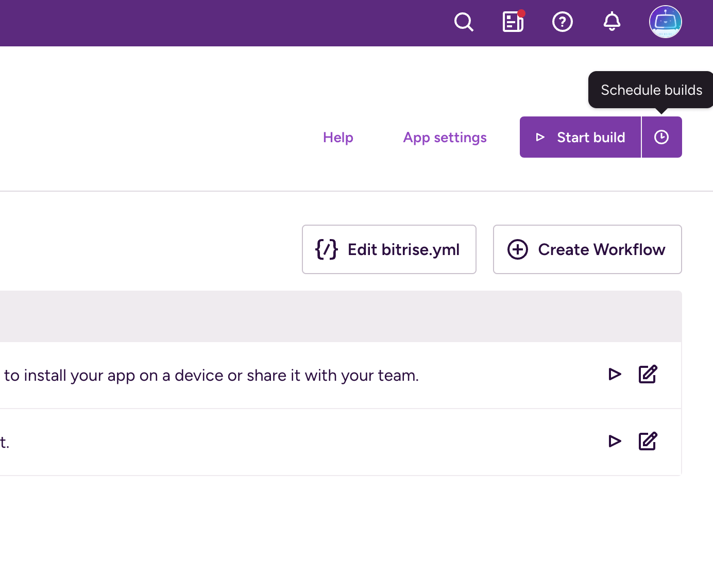Enter the branch you want to run into the Branch input field.
You can only set one branch. If a pull request to your repository is made from a forked branch, type the name of that branch to run a build of the pull request.
Pull request build
Starting a build of a pull request’s branch is NOT the same as a pull request build. The manually started build of a pull request branch will only build the state of the code on that branch. An automatically triggered pull request build, however, builds the state of the code as it will look like once you merged the pull request.
Optionally, enter a build message in the Message field.
Please note that entering the Git commit message of a specific commit doesn't trigger a build of that commit!
Select a Workflow that will run from the menu.
If you don't select one, Bitrise will choose a Workflow based on your app's trigger map
Scheduling a build
The Schedule this build option allows you to configure builds to be triggered at specific times. Read more: Scheduling builds.
Running Workflows from the Workflow Editor
You can manually start a build by running a single Workflow from the Workflow Editor.
To do so:
Open your app on Bitrise and click the button to open the Workflow Editor.
On the tab, use the WORKFLOW drop-down menu to select the Workflow you would like to run.
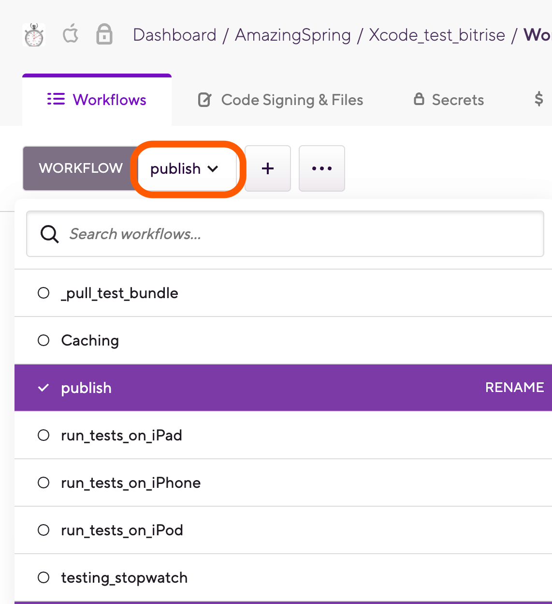 Click .
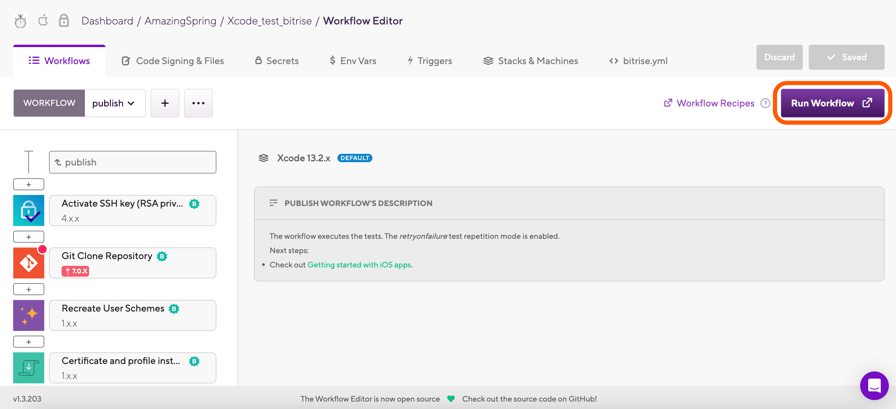 Specify the branch that you want to build in the Branch field.
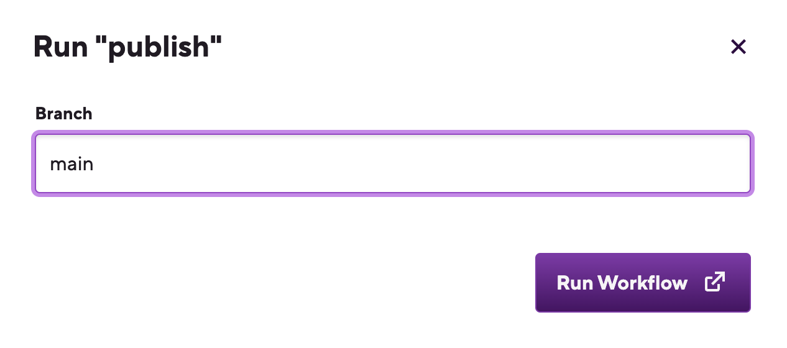 Click to start the build.
And that's it! As soon as you click the button, your build will be kicked off, and the build's page will open in a new tab.
Advanced configuration options for starting/scheduling builds
If you choose Advanced in the Build configuration window, you have all the options available with Basic, and a few more:
Git Tag: Builds a particular branch or commit that is tagged with the Tag you enter. If you set this, you can't set a commit hash.
Git Tags and commit hashes are conflicting options
You cannot specify both a Git Tag and a commit hash. When you set one, the other one will disappear. This ensures you cannot enter conflicting input values.
Commit Hash: Copy a specific commit’s hash here to build that particular commit. This option can even send a build status update to your git hosting service. If you set this, you can't set a Git Tag.
Commit hash takes precedence over the Branch option
If the Branch option specifies a branch where the commit hash you chose doesn't exist, Bitrise will find the branch that does have the given commit and run a build with that branch.
Custom Environment Variables: Create a custom Environment Variable that is used in the build. See Setting a custom Env Var when starting a build.
Generated cURL command: Based on the options you set in the Build configuration window, we provide an automatically generated cURL command. This can be copied and pasted, and you can run it on any platform that has cURL installed.
Triggering builds automatically
You can configure automatic build triggers on Bitrise by specifying a trigger event and a Workflow. You can trigger builds from code pushes, pull requests or Git tags.
You can configure automatic build triggers on Bitrise by specifying a code event that should trigger a build and a destination Workflow that should run. You can define multiple triggers for the same app.
By default, one trigger can trigger only one Workflow. If you need to trigger multiple Workflows from a single trigger, there are some ways:
Use Pipelines: in a Pipeline, Workflow run parallel in each Stage, and a Pipeline trigger starts the first Stage of a Pipeline. Read more: Configuring Pipeline triggers.
Chain Workflows together so they run after each other.
Use the Bitrise Start Build and the Bitrise Wait for Build Steps.
There are three types of triggers:
Code push: Trigger a build automatically whenever you push code using commits that match your conditions. For example, a commit to the specified branch of the app's repository triggers a build.
Pull request: Trigger a build automatically whenever a pull request matches your conditions. For example, you can specify source and/or destination branches where any pull request will trigger a build.
Git tag: Trigger a build automatically whenever a commit with a specific tag triggers a build.
Trigger conditions
Each trigger type can be set up with multiple different trigger conditions. The available trigger conditions are listed and explained in the procedure for creating each trigger type.
Not all trigger conditions are supported for all Git providers. For the detailed list, see Supported trigger conditions.
You can manage the triggers in the Triggers section of the Workflow Editor or you can directly edit the bitrise.yml of your app to set them up.
Also, you can't set up two different triggers for the same code event (for example, a code push) on the same branch (for example, main). The Workflow Editor will not allow you to save the configuration if you attempt to do so.
Code push triggers
A code push trigger starts a build every time the code in your app's repository changes.
A code push trigger has three possible condition types:
Push branch: Only commits on the specified branch of the app's repository trigger a new build.
Commit message: Only a specified commit message triggers a new build. For example, you have this commit message:
hotfix critical: Resolved security vulnerability in user authentication. You can use a wild card pattern likehotfix.*or a regex pattern likehotfix\s*(critical|high):.*to trigger builds for such commit messages.Files changed: A build is triggered only if certain files change. This is especially useful for monorepo setups; that is, when a single repository contains the code for multiple different projects. For example, a regex pattern like
ios/.*\.swift$can trigger builds when only Swift files within iOS directory are changed inside the monorepo. Similarly, simple wild card patterns likeios/app.js or ios/components/MyView.swiftorios/layouts/main_screen.xmlcan target specific files in the relevant directories and trigger builds.
These conditions can be combined: for example, you can set up a trigger that starts a build when a given file changes on the main branch of your app's repository. At least one condition must be configured for each trigger. When you set up multiple conditions, all of them must be fulfilled for a build to be triggered.
The trigger configuration allows the use of regular expressions: you can use a regex to match a branch, a commit message, or a filename. The first match will trigger a build and potential subsequent matches will be ignored.
Creating triggers for code pushes
Workflow Editor
bitrise.yml
If you use an OAuth connection to your repository, make sure you have a Bitrise webhook registered to your repository. If you use the GitHub App integration, you don't need a webhook.
Open your app on Bitrise.
Click the button on the main page.

On the Workflows & Pipelines pages, you can:
Click the button to get to the bitrise.yml tab of the Workflow Editor.
Select a Workflow from the list of the app's Workflows.
On the left, select Triggers.
On the Triggers page, select the Push tab.
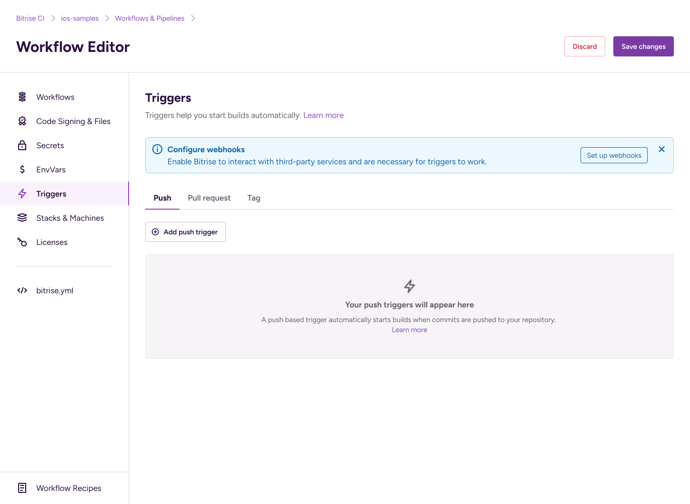Click .
In the Add push trigger dialog, set up one or more trigger conditions:
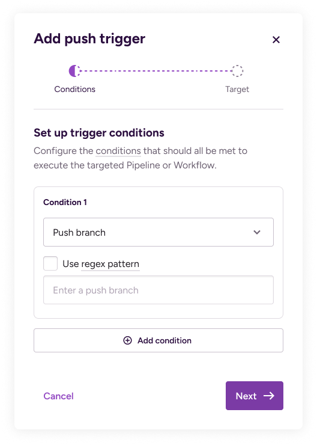: Commits to the specified branch will trigger a build.
: Commits with the specified commit message will trigger a build.
: Changes to the specified file(s) will trigger a build.
When setting multiple conditions, all conditions must be fulfilled for a build to start.
You can use regular expressions for any of the condition types.
Click when done.
Select the Workflow or Pipeline you want Bitrise to run when the conditions are met. When done, click .
Triggers in YAML
For a detailed description about how build triggers are defined in YAML format, see Build triggers in the bitrise.yml file.
If you use an OAuth connection to your repository, make sure you have a Bitrise webhook registered to your repository. If you use the GitHub App integration, you don't need a webhook.
Open the
bitrise.ymlfile.Under
trigger_map, add a new trigger by defining the type aspushand setting the trigger condition:trigger_map: - type: push commit_message: your_message
In this example, we use
commit_messageas a trigger condition. The available conditions are:push_branch: Commits to the specified branch will trigger a build.commit_message: Commits with the specified commit message will trigger a build.changed_files: Changes to the specified file(s) will trigger a build.
You can use a regex for either of them by adding
regex:to a trigger condition. For example:commit_message: regex: ".*"
Add a Workflow or Pipeline that should be triggered.
trigger_map: - type: push commit_message: your_message workflow: primary
You’re done! From now on, if code gets pushed to the selected branch of your app’s repository, Bitrise will trigger a build with the selected Workflow or Pipeline.
Pull request triggers
A pull request trigger starts a build every time a pull request is opened in your app's repository.
A pull request trigger has three possible condition types:
Source branch: The name of the branch containing the changes of the pull request.
Target branch: The name of the branch that the pull request should be merged to.
Pull request label: Only pull requests with a certain label applied trigger builds. For example, manually trigger builds for specific PRs by adding a label like build-test.
These conditions can be combined: for example, you can set up a trigger that starts a build when a pull request is opened from a given source branch with a certain label. At least one condition must be configured for each trigger. When you set up multiple conditions, all of them must be fulfilled for a build to be triggered.
The trigger configuration allows the use of regular expressions: you can use a regex to match a branch or a PR label. The first match will trigger a build and potential subsequent matches will be ignored.
Builds triggered by pull requests might be subject to manual approval: Approving pull request builds.
By default, draft pull requests trigger builds, too. This can be disabled at any time: Triggering builds from draft PRs.
Creating triggers for pull requests
Workflow Editor
bitrise.yml
Make sure you have a Bitrise webhook registered to your repository.
Open your app on Bitrise.
Click the button on the main page.
On the Workflows & Pipelines pages, you can:
Click the button to get to the bitrise.yml tab of the Workflow Editor.
Select a Workflow from the list of the app's Workflows.
On the left, select Triggers.
On the Triggers page, select the Pull request tab.
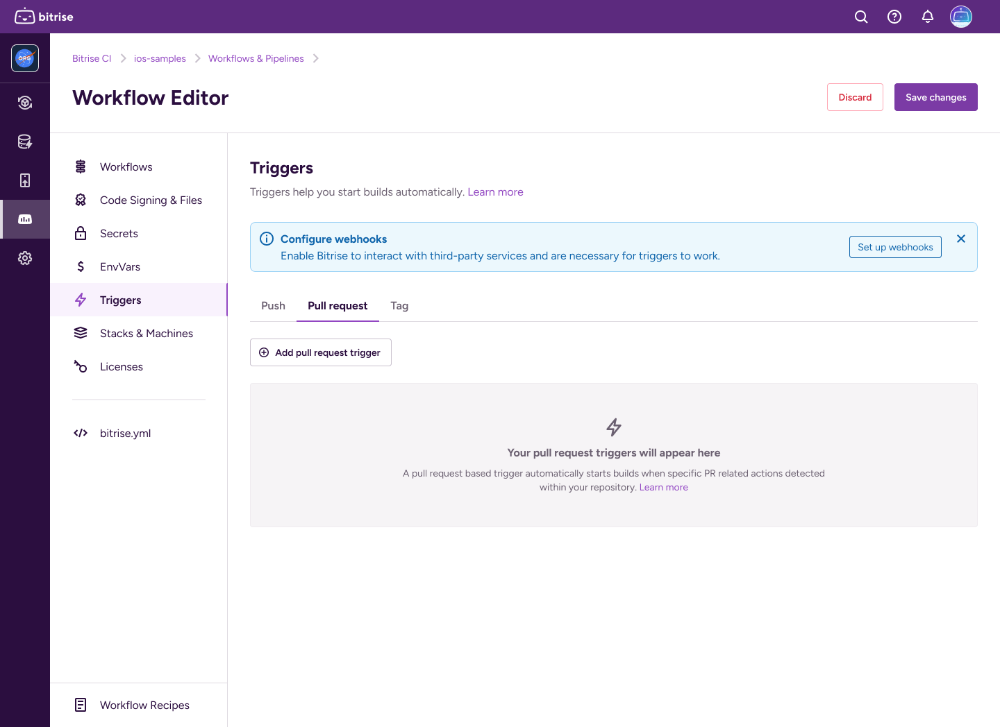Click .
In the Add pull request trigger dialog, set up one or more trigger conditions that will trigger builds:
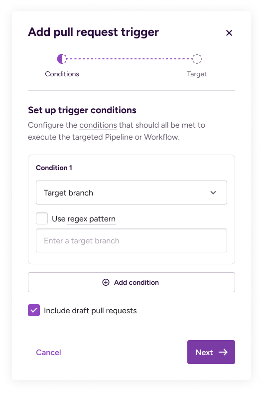: The branch from which the pull request is opened.
: The branch the pull request will be merged into.
: A label applied to the PR.
: A specified comment submitted to a pull request.
: One of the commit messages of the pull request.
: Changes to the specified file(s) in the pull request.
Pull request trigger limitations
To use the PR comment trigger, allow pull request comment to be passed on as the webhook payload at your Git provider. Enable two events: comment created, comment updated.
When setting multiple conditions, all conditions must be fulfilled for a build to start.
You can use regular expressions for any of the condition types.
Click when done.
Select the Workflow or Pipeline you want Bitrise to run when the conditions are met. When done, click .
Triggers in YAML
For a detailed description about how build triggers are defined in YAML format, see Build triggers in the bitrise.yml file.
Make sure you have a Bitrise webhook registered to your repository.
Open the
bitrise.ymlfile.Under
trigger_map, add a new trigger by defining the type aspull-requestand setting the trigger condition:trigger_map: - type: pull-request pull_request_target_branch: regex: ".*"In this example, we use
pull_request_target_branchas a trigger condition with a regular expression. The available conditions are the following (you can use a regex for each of them):pull_request_source_branch: Pull requests opened from the specified branch will trigger a build.pull_request_target_branch: Pull requests to be merged into the specified branch will trigger a build.pull_request_label: Pull requests with a given label will trigger a build.
You can use a regex for either of them by adding
regex:to a trigger condition.Add a Workflow or Pipeline that should be triggered.
trigger_map: - type: pull-request pull_request_target_branch: regex: ".*" workflow: primary
And you’re done! From now on, if a pull request is opened in your repository, Bitrise will trigger a build with the selected Workflow!
Triggering builds from draft PRs
GitHub and GitLab offers a feature called draft pull request (or merge request in the case of GitLab): when you create a pull request (PR), you can choose to create a pull request that is ready for review or a draft pull request. Draft pull requests cannot be merged, and code owners are not automatically requested to review draft pull requests.
Git provider limitations
This feature is only supported for GitHub and GitLab repositories.
By default, draft PRs trigger builds: every time you open a draft PR or push code to a draft PR. You can disable this at any time with the draft PR toggle in the Workflow Editor. You can check out the exact code events that trigger builds depending on the draft PR trigger settings: Build trigger behavior for draft PRs.
Each separate trigger has its own toggle: you can configure your app so that certain triggers start a build from draft PRs while other triggers don't.
Disabling builds from a draft PR
Skipping Steps if a build is triggered by a draft PR
This guide tells you how to disable triggering builds from a draft PR altogether. You can, however, also skip certain Steps in a build that is triggered by a draft pull request. You just need to use a run_if condition and the GITHUB_PR_IS_DRAFT Environment Variable: for more information, see Enabling or disabling a Step conditionally.
Workflow Editor
bitrise.yml
Open your app on Bitrise.
Click the button on the main page.
On the Workflows & Pipelines pages, you can:
Click the button to get to the bitrise.yml tab of the Workflow Editor.
Select a Workflow from the list of the app's Workflows.
On the left, select Triggers.
Find the trigger you need and toggle the Draft Pull Requests enabled switch.
Open the
bitrise.ymlfile.In the
trigger_mapproperty, find your trigger. It should have atype: pull_requestfield.Add
draft_pull_request_enabled: falseto it.trigger_map: - type: pull-request pull_request_target_branch: main workflow: primary draft_pull_request_enabled: false
Build trigger behavior for draft PRs
The table shows whether a build is triggered when a specific action is performed regarding draft PRs, depending on the draft PR trigger settings. For example, converting a draft PR to a PR doesn't trigger a build if the draft PR trigger is enabled but it does trigger a build when it's disabled.
Action | Draft PR trigger is enabled | Draft PR trigger is disabled |
|---|---|---|
Open a draft PR | ||
Push a commit to a draft PR | ||
Convert a draft PR to PR | ||
Convert PR to draft PR |
Git tag triggers
A Git tag trigger starts a build every time a commit with a given Git tag is pushed to your app's repository.
For a tag trigger, there is only one possible condition: the tag itself. When setting up the trigger, you need to either set a full tag or a regular expression pattern.
Creating Git tag triggers
Note that certain providers, such as GitLab, require Tag Push events to be specifically enabled in the webhook setup.
Workflow Editor
bitrise.yml
Make sure you have a Bitrise webhook registered to your repository.
If your Git provider requires it, make sure that Tag Push events are enabled in the webhook configuration.
For example, GitLab requires it.
Open your app on Bitrise.
Click the button on the main page.
On the Workflows & Pipelines pages, you can:
Click the button to get to the bitrise.yml tab of the Workflow Editor.
Select a Workflow from the list of the app's Workflows.
On the left, select Triggers.
On the Triggers page, select the Tag tab.
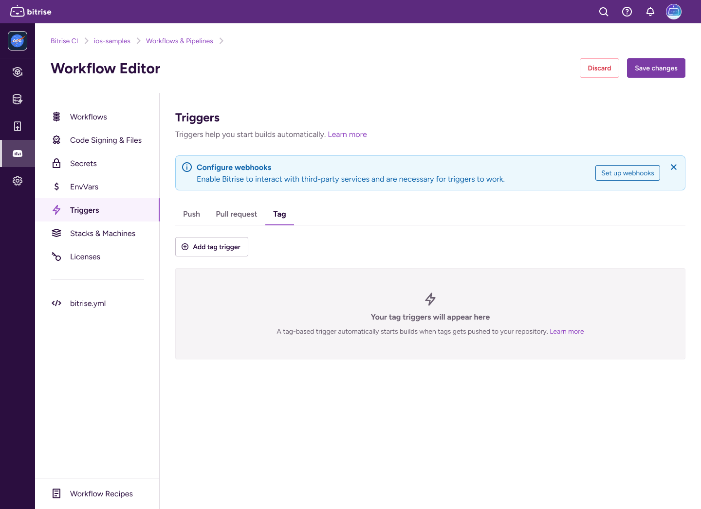Click .
In the Add tag trigger dialog, add a tag in the Tag field.
You can use a regular expression instead of the full tag.
Click when done.
Select the Workflow or Pipeline you want Bitrise to run when the conditions are met. When done, click .
Triggers in YAML
For a detailed description about how build triggers are defined in YAML format, see Build triggers in the bitrise.yml file.
Make sure you have a Bitrise webhook registered to your repository.
Open the
bitrise.ymlfile.Under
trigger_map, add a new trigger by defining the type astag-pushand set thetagtrigger condition:trigger_map: - type: tag-push tag: '*'
This example uses a wildcard that triggers a build on any tag push.
Add a Workflow or Pipeline that should be triggered.
trigger_map: - type: tag-push tag: '*' workflow: primary
Deactivating a trigger
You can temporarily deactivate any build trigger. A deactivated trigger doesn't trigger builds but retains all configuration information. If you need the trigger again in the future, you don't have to recreate it: just reactivate it with a single click.
To deactivate a build trigger:
Workflow Editor
bitrise.yml
Open the Workflow Editor on Bitrise.
On the left, select Triggers.
Select the appropriate tab, depending on the trigger you want to deactivate.
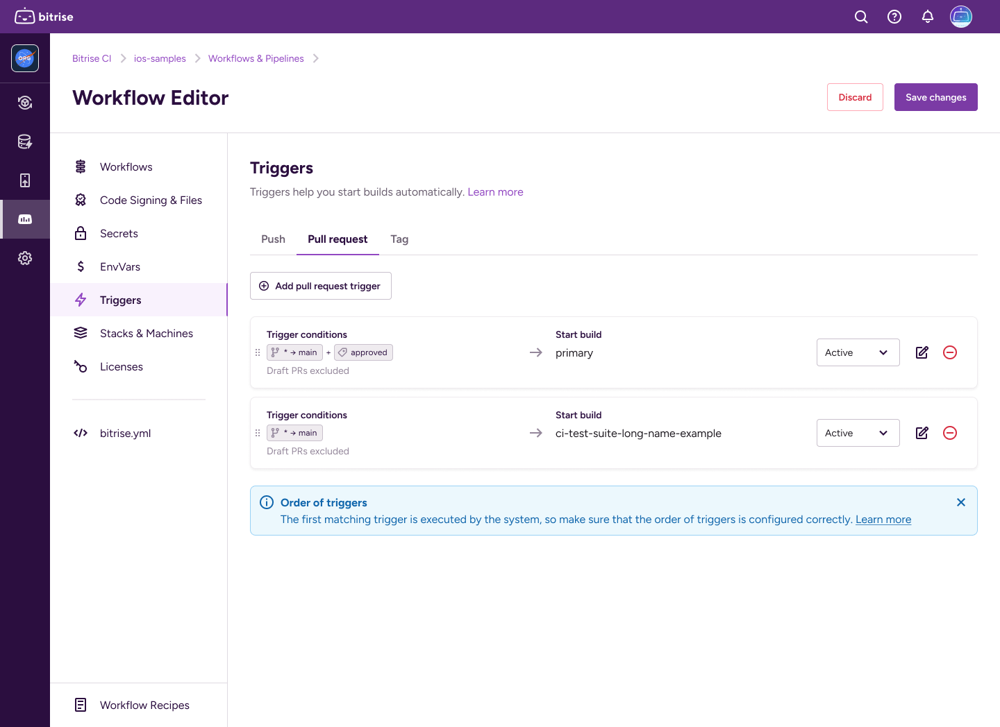Set the trigger to .
Open the
bitrise.ymlfile.Find the
trigger_mapproperty and the trigger you want to disable.Add
enabled: falseto it.trigger_map: - type: push push_branch: main workflow: primary enabled: false
Supported trigger conditions
Not all trigger conditions are available for all Git providers. As a general rule, all our trigger conditions are available for the cloud service of the three most frequently used Git providers: GitHub, GitLab, and Bitbucket. For other providers, or self-hosted Git repositories, check out the detailed table for both push triggers and pull request triggers.
Git provider | Branch | Commit message | Files changed |
|---|---|---|---|
GitHub (cloud) | |||
GitHub (self-hosted) | |||
GitLab (cloud) | |||
GitLab (self-hosted) | |||
Bitbucket (cloud) | |||
BitBucket Server (self-hosted) | |||
Assembla | |||
Deveo (Perforce) | |||
Gogs | |||
VS Team Services |
Git provider | Source branch | Target branch | Labels | Comments | Commit message | Changed files |
|---|---|---|---|---|---|---|
GitHub (cloud) | ||||||
GitHub (self-hosted) | ||||||
GitLab (cloud) | ||||||
GitLab (self-hosted) | ||||||
Bitbucket (cloud) | N/A | |||||
BitBucket Server (self-hosted) | N/A | |||||
Assembla | N/A | |||||
Deveo (Perforce) | ||||||
Gogs | ||||||
VS Team Services |
Scheduling builds
You can schedule your builds to run automatically at a specific time of the week.
You can schedule your builds to run automatically at a specific time of the week so that you can check your logs when it’s most convenient for you.
When scheduling a build, you can define custom Environment Variables. You can also set advanced filters for Git Tags and for Git commit hash.
If you have one or more regularly scheduled builds, you can:
Edit their configuration.
Trigger them manually at any time.
Temporarily disable them.
Permanently delete them.
Scheduling a build
How to schedule a build with the basic configuration options on Bitrise:
On the Bitrise CI page of your app, find the button and click the button with the clock icon next to it.
In the Schedule build dialog, set up the scheduling cadence: you can choose between Basic and Cron settings.
In the Basic settings, you need to set a start date, a start time in 24-hour time format, and select a timezone.
In the Cron settings, you can set a
cronschedule expression. The dialog will parse your expression and display the configured time in a human-readable format.
If you chose Basic, enable or disable repetition with the Repetition toggle. If you enable repetition, configure the frequency, from minutes to years.
The build will be triggered with the configured frequency, always at the same time, determined by the scheduling cadence. For example, you can configure your builds to run on Monday and Thursday every week.
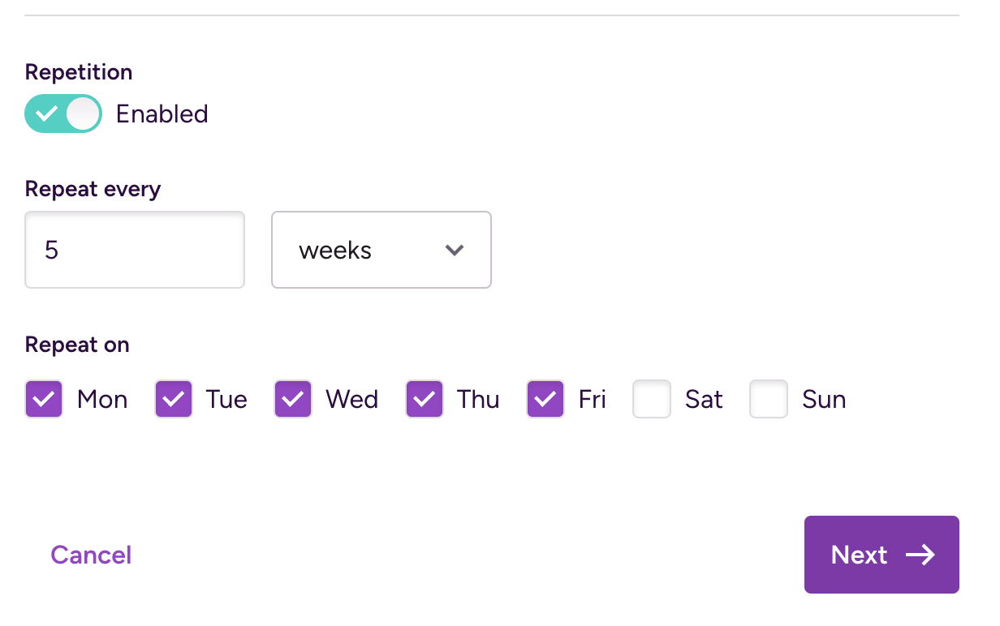When ready, click Next to proceed to the build configuration.
Select between Basic and Advanced configuration.
Basic configuration offers three options:
A branch name. This is a required field.
A message in the Message field. This is not related to Git commit messages at all. It's just a place to provide some optional information about your build.
A Workflow or a Pipeline. You can select a specific one or use the Based on trigger map option to select one using the the trigger map in the app's
bitrise.ymlconfiguration file.
Pull request branch
Starting a build of a pull request’s branch is NOT the same as a pull request build. The manually started build of a pull request branch will only build the state of the code on that branch. An automatically triggered pull request build, however, builds the state of the code as it will look like once you merged the pull request.
For advanced configuration options, see the Advanced configuration options for starting/scheduling builds section.
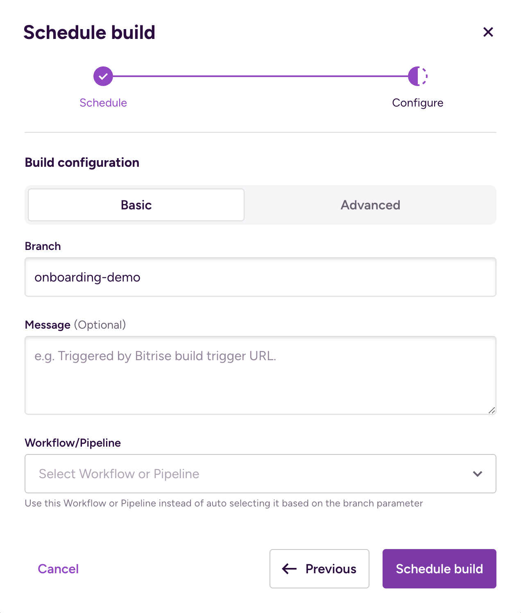When done, click Schedule build.
Advanced configuration options for starting/scheduling builds
If you choose Advanced in the Build configuration window, you have all the options available with Basic, and a few more:
Git Tag: Builds a particular branch or commit that is tagged with the Tag you enter. If you set this, you can't set a commit hash.
Git Tags and commit hashes are conflicting options
You cannot specify both a Git Tag and a commit hash. When you set one, the other one will disappear. This ensures you cannot enter conflicting input values.
Commit Hash: Copy a specific commit’s hash here to build that particular commit. This option can even send a build status update to your git hosting service. If you set this, you can't set a Git Tag.
Commit hash takes precedence over the Branch option
If the Branch option specifies a branch where the commit hash you chose doesn't exist, Bitrise will find the branch that does have the given commit and run a build with that branch.
Custom Environment Variables: Create a custom Environment Variable that is used in the build. See Setting a custom Env Var when starting a build.
Generated cURL command: Based on the options you set in the Build configuration window, we provide an automatically generated cURL command. This can be copied and pasted, and you can run it on any platform that has cURL installed.
Editing a scheduled build
To change the configuration of a regularly scheduled build:
Go to the Builds tab of your app.
On the top, you should see a list of your scheduled builds.
Click Show scheduled.
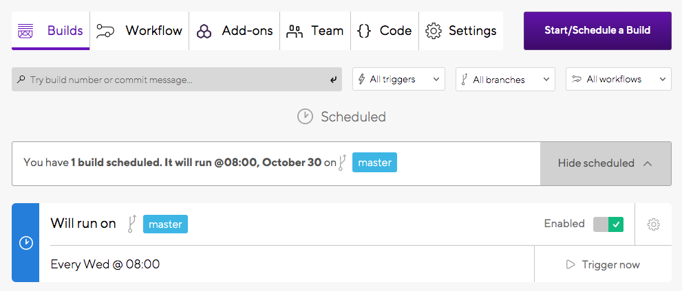Click the little gear icon to open the settings menu.
Click Edit scheduled build.
Make the changes you want and click Save changes.
Triggering a scheduled build manually
To immediately trigger a scheduled build:
Go to the Builds tab of your app.
On the top, you should see a list of your scheduled builds.
Click Show scheduled.
Click Trigger now.
Disabling a scheduled build
To temporarily disable a regularly scheduled build:
Go to the Builds tab of your app.
On the top, you should see a list of your scheduled builds.
Click Show scheduled.
Toggle the Enabled option.
The build will not run until you enable it again.
Deleting a scheduled build
To permanently delete a regularly scheduled build:
Go to the Builds tab of your app.
On the top, you should see a list of your scheduled builds.
Click Show scheduled.
Click the little gear icon to open the settings menu.
Click Delete and then click Delete again when prompted for confirmation.
Approving pull request builds
You have the option of requiring manual approval for Bitrise builds started by pull requests if the app contains exposed Secrets. This option cannot be deactivated for public apps.
Not all pull requests need to be built. After all, for most projects, anyone can create a fork of the repository and submit a pull request. However, if an app on Bitrise is set up with Secrets that are exposed for pull request builds, for example, then you probably don’t want just anyone to be able to access those secrets.
That is why you have the option to require approval for a pull request build before it can start. This feature works somewhat differently for public and private apps:
Private apps: by default, pull requests submitted from a fork require approval. The setting can be changed. If your secrets are NOT exposed to PRs, the build will run without asking for approval.
Public apps: pull requests submitted from a fork require approval by default and it cannot be changed. Public apps CANNOT opt out of this feature.
Enabling manual approval for private apps
To enable or disable manual approval, you need to be an Admin or an Owner on the application’s team. The application MUST be private: public apps cannot opt out of this feature!
Open your app on Bitrise with a user that has the Admin role on the app.
On the main page of the app, click on the App Settings icon:
 .
.
On the left, select Builds.
Scroll down to Manual build approval.
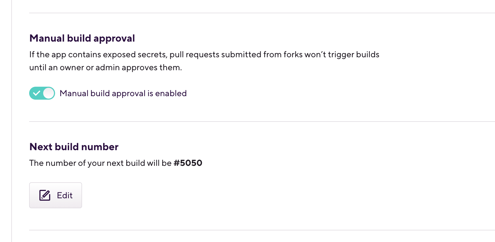Please note that you can only change this setting for private apps! For public apps, this is always enabled.
Toggle the switch to enable or disable it.
By default, it is set to disabled.
Approving the PR build
Approving the PR build
Please note that approving a PR build means approving it on Bitrise. Approving a pull request on GitHub, for example, isn't sufficient to start a build on Bitrise: an owner has to approve the build on Bitrise itself.
If a pull request is submitted from a fork, you will be notified that a PR build is waiting for approval:
A notification email will be sent with the name of the app, as well as links to the repository itself and to the app’s Builds page on Bitrise.
On the Git provider, the status of the CI check will show Pending - Waiting for approval
On the Builds page of the app, a confirmation box will be displayed.
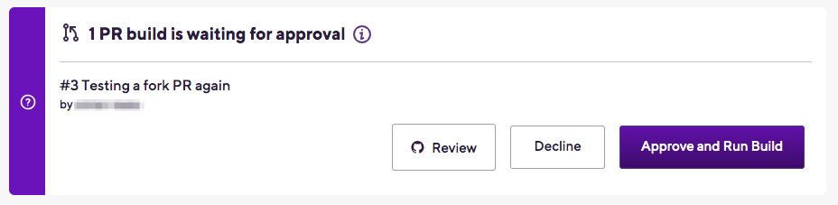
To approve and run the build, click the button. Clicking opens the pull request on the website of your Git provider.
Build triggers in the bitrise.yml file
On Bitrise, you can create triggers (or webhooks) for events such as code push or pull requests to start a build automatically.
You can trigger builds on Bitrise by registering a webhook at your source code hosting provider and configuring a build trigger. Each app with build triggers has its own trigger map in its bitrise.yml file. The trigger map defines the build triggers, including their type and trigger conditions.
The trigger map is essentially a list of filters: every trigger is a filter item that matches a certain case. If a case is matched, a build is triggered. Every trigger must include at least one condition.
Overview of the trigger map
The trigger map is defined in a trigger_map property in the bitrise.yml file. A valid trigger map must have at least one trigger.
A trigger has three main elements:
The type of the trigger:
push,pull_request, ortag.The trigger condition. For example, the source branch of a pull request.
The Workflow or Pipeline to be triggered.
One trigger means one build: a single trigger can only trigger a single Workflow or Pipeline. You can chain Workflows together run several Workflows in succession from a single trigger.
Below is a single trigger that triggers a build with the primary Workflow when a pull request is opened from any branch.
trigger_map: - pull_request_source_branch: "*" type: pull_request workflow: primary
Multiple trigger conditions
If you define multiple trigger conditions in a single item then all conditions have to match in order to trigger a build. For example:
trigger_map: - pull_request_target_branch: "main" pull_request_source_branch: "develop" type: pull_request workflow: primary
This will only select the primary workflow if the pull request’s source branch is develop AND the target branch is main.
Order of triggers
The order of the triggers is important: the first trigger with matching conditions will trigger a build. For example, let's say you have two code push triggers:
trigger_map: - type: push push_branch: main workflow: primary - type: push commit_message: deploy workflow: deploy
The first trigger triggers the primary Workflow if code is pushed to the main branch of the app's repository.
The second trigger triggers the deploy Workflow if a commit with the commit message deploy is pushed to any branch of the repository.
What happens when a commit is pushed to the main branch with the commit message deploy? The commit matches all conditions of the first trigger so the primary Workflow is triggered. In this scenario, the deploy Workflow is NOT triggered, even though the commit matches all conditions of that trigger, too.
Wildcards and regex
We support wildcards (*) for simple text matching within triggers. Wildcards are a good choice when you don't need the advanced pattern matching capabilities of regular expressions. For example, a trigger based on commit messages starting with fix can be achieved using a wildcard.
Wildcards are useful to match specific, fixed values appearing in the input. We recommend using regexes are needed when multiple alternative values, negation, capturing specific groups of characters or specific character types (for example, numbers only) are needed.
To use regular expressions for a trigger condition, you need to add regex: to its value in the following format:
trigger_map:
- type: push
push_branch:
regex: <regular expression>
workflow: primary
- type: pull_request
pull_request_source_branch:
regex: <regular expression>
Components of the trigger map
The trigger_map property of accepts the values listed in the tables below.
Component | Description | Accepted values | Default value |
|---|---|---|---|
| The type of the trigger. A trigger with a given type only accepts trigger conditions belonging to that type. |
| N/A |
| A boolean property that defines if the trigger is currently active. |
|
|
| The Workflow or Pipeline that is triggered. You can't set both. | The exact name of the Workflow or Pipeline. | N/A |
Component | Description | Default value |
|---|---|---|
| The branch of the repository where code is pushed to trigger a build. |
|
| The commit message to trigger a build. |
|
| The path to a file or folder where changes should trigger a build. |
|
Component | Description | Default value |
|---|---|---|
| The branch of from which the pull request is opened. |
|
| The branch which is the merge target of the pull request. |
|
| The pull request label. |
|
| A boolean property that defines if draft pull requests trigger builds. |
|
| A comment posted on a pull request. |
|
| A specific commit message in pushes to a pull request. |
|
| Specific files that are modified in a pull request. |
|
Starting parallel builds with a single trigger
You can start multiple parallel builds by using the Bitrise Start for Build and the Bitrise Wait for Build Steps.
Using Build Pipelines to start parallel builds with a single trigger
If you have a credit-based account and you are planning on running multiple tasks parallel with a single trigger, we recommend using Build Pipelines. For more information, check out Build Pipelines.
If you have more than one concurrency or you have a credit-based account, you can run more than one build simultaneously. And since we want to make life as easy for you as possible, these builds can be started automatically, with a single trigger. Let’s go through how it works!
In the example, we have three Workflows of a single app set up to run at the same time. Let’s call these Workflows Trigger, Building and Testing. The workflow called Trigger will be triggered by a pull request, and then the workflow will trigger Building and Testing which will run simultaneously.
All workflows run on separate, clean Virtual Machines. They can also run on different types of stacks: to choose the stack for any Workflow, go to the Workflow Editor of the app and select the Stack tab.
If any of the builds fail, the build will be considered a failed build. If the build is triggered by a webhook, Bitrise will send a summarized build result to your Git provider. If any of the parallel builds fail, a failed status will be reported.
No reports for "child" builds
Bitrise will send a Git status report only for the original "parent" build, the one that triggered all the other builds. The "child" builds will not send back status reports to your Git provider!
For example, if build A triggers builds B and C, a status report will be sent once A is finished. There will be no separate status reports for builds B and C, however.
What you need:
A Personal Access Token.
A Secret Environment Variable storing the token.
The Bitrise Start Build Step.
The Bitrise Wait for Build Step.
Bitrise Start Build Step on the CI
Since the Bitrise Build Start Step heavily relies on the parameters of the currently running build (for example, the app slug, build slug and the build number) to call the API, you cannot use the Bitrise Build Start Step locally.
bitrise.yml example
You can edit your bitrise.yml file on the tab of the Workflow Editor, or you can edit the file locally. The example below focuses on the Bitrise UI, but if you prefer to use YAML format, check out our example!
Create a Personal Access Token for your user.
Go to Profile Settings and select the Security option on the left side. Click the button.
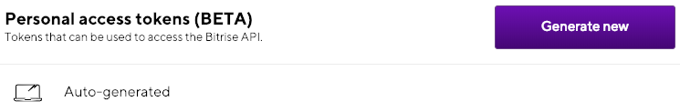Copying the token
Make sure the copy the token once it's generated: you won't be able to see it again!
Create a Secret Environment Variable on the Secrets tab of the app’s Workflow Editor and add the token as its value.
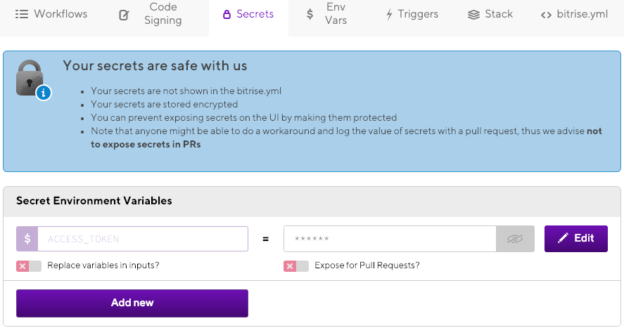Feel free to use any key you wish for the secret. We recommend something simple like
$ACCESS_TOKEN.Add the Bitrise Start Build Step to the Trigger Workflow.
Note that the Bitrise Start Build Step will set an Environment Variable to all builds it starts:
$SOURCE_BITRISE_BUILD_NUMBER. Each build triggered by the Step will have their own build numbers but the source build number will be the same for all of them.Add the secret env storing your personal access token to the Bitrise Access Token input of the Step: click the button and choose the key you created.
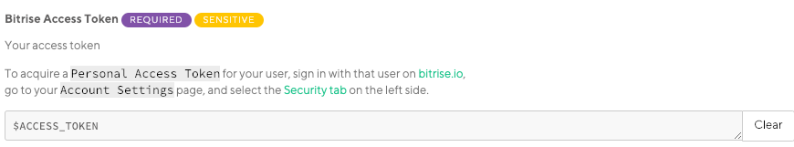Find the Workflows input of the Step, and add
BuildingandTestingto it.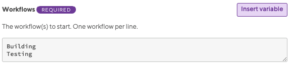Add the Bitrise Wait for Build Step as the last Step of the Trigger Workflow.
Checking build statuses
The Step checks statuses of the builds defined in the Step. The builds are defined in the Build slugs input: the slugs are the output of the Bitrise Start Build Step. As long as the builds defined by the slugs are running, the Step will hold the build it is running in. The build will fail if any of the builds included in the Step fail.
Add the secret env storing your personal access token to the Bitrise Access Token input of the Step: click the button and choose the key you created.
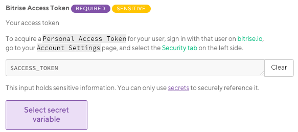
And you are done! Once you trigger the Trigger workflow, the Bitrise Start Build Step of the Workflow will trigger two more builds running simultaneously. If those two builds are successful, the Bitrise Wait for Build Step lets the first build finish. A single status report is sent to the git hosting provider, regardless whether the build is successful or not.
bitrise.yml example
Trigger:
steps:
- build-router-start@0:
inputs:
- workflows: |-
Building
Testing
- access_token: "$BITRISE_API_KEY"
- build-router-wait@0:
inputs:
- access_token: "$BITRISE_API_KEY"Skipping a given commit or pull request
Depending on your settings, every code change in your repository can trigger Bitrise builds. However, if you need to, you can skip a specific commit or pull request.
Depending on your settings, every code change in your repository can trigger Bitrise builds. However, if you need to, you can skip a specific commit or pull request. Skipping means, in this context, that a code change will NOT trigger a build on Bitrise, even if the triggers are set up to do so.
Preventing a commit from triggering a build
To make sure a specific commit does not trigger a build, include either [skip ci] or [ci skip] in the commit message:
This is not important, please [skip ci]
Or:
I just changed the README [ci skip]
Only the head/last commit message is checked!
If you push more than one commit, only the last (head) commit’s message will be checked for the skip ci pattern!
If you do want to start a build after all, you have two choices:
Rebase the commit (change the commit message).
Push another commit.
Pushing an empty commit
Git allows to create and push empty commits. If you want to build a skipped build you can do git commit --allow-empty -m "I decided to run this" on the related branch and push the commit.
Preventing a pull request from triggering a build
Pull requests are treated as (virtual) commits themselves, where the commit message is the title + description of the pull request. It is not the commit messages of the individual commits that make up the pull request.
To skip a pull request include the [skip ci] pattern in the pull request’s title or its description.
Individual commit messages are not checked
Putting the [skip ci] pattern in the commit message of individual commits that make up the pull request will not work: the pull request will trigger a build if the appropriate trigger is set up.
Once you decide to not to skip the pull request, you can simply remove the [skip ci] pattern from the pull request’s title or description. This should automatically trigger a new build with the latest commit, and all future commits of the pull request will be built too (unless you add a [skip ci] pattern again).
Skipping Steps triggered by a draft PR
When you use the draft PR function of GitHub, Bitrise inserts an Environment Variable called GITHUB_PR_IS_DRAFT into the build Environment Variable list. If this Env Var is available in your build Env Var list, its value is always set to true.
Triggering builds from draft PRs
You can also configure your trigger map to avoid triggering builds from draft pull requests (or merge requests in the case of GitLab). This doesn't require the GITHUB_PR_IS_DRAFT Env Var: you just need to toggle a switch in the Workflow Editor.
You can use the GITHUB_PR_IS_DRAFT Env Var in your build as part of a conditional: for example, you can skip certain Steps in builds that are triggered by draft PRs:
workflow1:
steps:
- script:
run_if: '{{enveq "GITHUB_PR_IS_DRAFT" ""}}'
inputs:
- content: |-
#!/usr/bin/env bash
# fail if any commands fails
set -e
# debug log
set -x In this example, the run_if condition means that the Step will only run if the build is NOT triggered by a draft PR.
Yo recommend that you insert below run_if command to each Step in your Workflow to skip the Steps.
Starting a new build after a draft PR
If you have previously used the draft PR on a build but now you are ready to merge changes to your code from the same PR, clicking the Ready for review button on GitHub won’t trigger a new build on Bitrise. The previous builds will also contain the draft PR related Env Vars. In this case, we recommend you manually start a brand new build from the website or trigger the CI with a new commit.